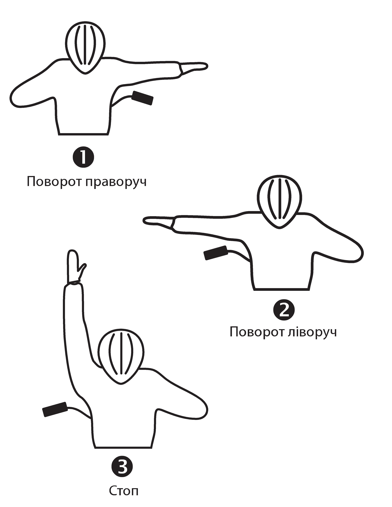

Вікові обмеження:- до 7 років їздимо лише по тротуарах в супроводі дорослих;
- від 7 до 14 років їздимо по велосипедних доріжках, в житловій зоні, парках;
- від 14 років заборонено їздити по тротуарах, їздимо по дорогах і велосипедних доріжках
Велосипеди повинні рухатися по велодоріжках, а якщо її немає - по правому краю проїздної частини в один ряд (також можна їздити по узбіччю).
Виїзжати з правої смуги можна для об'їзду перешкод.
Велосипед повинен бути обладнаний світлоповертачами:- білого кольору спереду;
- оранжевого по боках;
- червоного позаду;
- та звуковим сигналом;
- для поїздок в темну пору року обов'язково повинен бути ввімкнений ліхтар(фара).
також рекомендовано встановити червоний ліхтар позаду, щоб вас було краще видно в темноті.
Перед кожним виїздом перевіряйте справність гальм, перемикання передач і відсутність механічних поломів у частинах велосипеда.
Надавайте перевагу максимально яскравому одягу, щоб бути помітним здалеку. Задля цього стане у нагоді жилет жовтогарячого або салатового кольору зі світловідбивними смугами.
Намагайтеся їздити в шоломі. Припадінні він захищає найбільш вразливу частину тіла — голову. Травми голови — одні з найважчих серед можливих під час падіння з велосипеда. Крім того, шолом захищає голову від сонячного удару та дощу.
Слід запам'ятати, що їзда по дорозі відрізняється від катання в парку. Ваші рухи і маневри повинні бути передбачувані іншим учасникам дорожнього руху, а ваші дії не повинні створювати небезпеку на дорозі.
Під час руху по проїзній частині, перед зупинкою, перелаштуванням, поворотом або розворотом велосипедисти зобов'язані подавати попереджувальні сигнали: 
Увага! Попереджувальні сигнали не дають вам переваги у русі. Сигнали лише інформують інших учасників дорожнього руху про ваше намір змінити напрямок руху.
Велосипедистам заборонено:- керувати велосипедом у стані алкогольного сп'яніння або перебуваючи під впливом наркотичних чи токсичних речовин;
- керувати велосипедом у стані хвороби,втоми, а також під впливом лікарських препаратів, що знижують швидкість реакції та увагу;
- під час поїздки на велосипеді користуватися засобами зв'язку, тримаючи їх у руці;
- керувати велосипедом із несправним гальмом, звуковим сигналом, а в темну пору доби і в умовах недоста тньої видимості — з вимкненим ліхта рем (фарою) чи без світлоповертачів;
- під час руху триматися за інший транспортний засіб;
- їздити, не тримаючись за кермо, та знімати ноги з педалей (підніжок);
- перевозити пасажирів на вело сипеді (за винятком дітей до 7 років, які перевозяться на додат ковому сидінні, обладнаному надійно закріпленими підніжками);
- буксирувати велосипеди;
- буксирувати причеп, не передбачений для експлуатації з велосипедом;
- рухатись по дорогам у протилежному напрямку (зліва), за вийнятком випадків велосипедних контр-смуг.